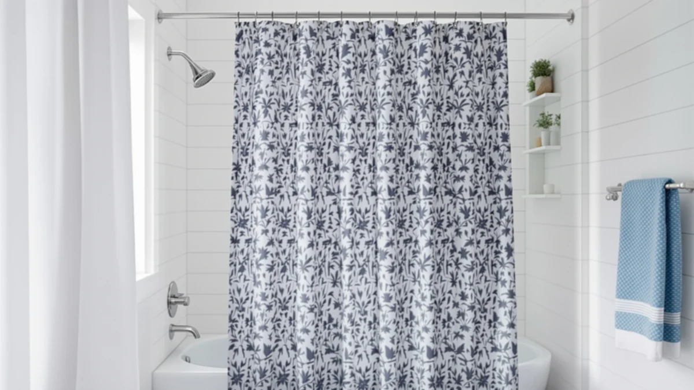

Lameirose Shower Curtain Review (2026): Worth It?
Prices and picks verified as of November 2026. Independent, reader-supported reviews.


Quick Answer
This Lameirose shower curtain review finds the $19.99 White Shower Curtain Lace a reasonable pick for a quick decor refresh, though its polyester and PEVA build won't match the durability of a heavier cotton curtain. It ships in one size, 72 by 72 inches, without a liner, so budget for that separately if you need one.
Our pick: Lameirose White Shower Curtain Lace, $19.99 Check Price on Amazon
Bottom line: our top pick is the Lameirose White Shower Curtain Lace Shower Curtain Sheer at $19.99.
Things to Know Before You Buy
- This Lameirose shower curtain review centers on the White Shower Curtain Lace ($19.99), a 72 by 72 inch curtain built from a polyester and PEVA blend with a lace trim.
- It ships as a single curtain, not a curtain-and-liner set, so most bathrooms will need a separate waterproof liner.
- The polyester and PEVA blend keeps the price low but feels lighter than cotton or linen curtains in the same price range.
- One size only, 72 by 72 inches, fits a standard shower or tub alcove but not oversized or walk-in showers without adjustment.
This Lameirose shower curtain review looks at whether the brand's $19.99 White Shower Curtain Lace is worth adding to your bathroom. Lameirose builds it from a polyester and PEVA blend and trims it with a lace pattern, aiming for a look that reads nicer than its price suggests. We researched its listed material, size, and pricing against verified owner feedback and three similarly priced alternatives to see where it actually fits. Curtains in this $20 bracket crowd a lot of listings on Amazon, and most of them look identical in thumbnail photos, so the lace trim is one of the few design details that sets this one apart at a glance.
If you want the short version, the Lameirose curtain covers the basics well for a budget decor refresh but isn't built to replace a heavier cotton curtain for years of daily use. It comes in one size, 72 by 72 inches, and ships as a standalone curtain rather than a curtain-and-liner set, so plan on buying a liner separately if you don't already own one. Shoppers furnishing a guest bathroom, rental, or starter apartment tend to get the most out of it. If you need something that will survive a decade of daily family use, read the alternatives section before you buy, since none of the curtains at this price point are built for that kind of lifespan.
Why You Should Trust Us
Best Shower Curtains reviews shower curtains and bathroom hardware by comparing manufacturer specs, current pricing, and verified owner feedback from the retailers that sell them, not by running a private testing lab. Ilane Tall, our home and bath editor, built this Lameirose shower curtain review by checking the curtain's listed material, size, and price against three alternatives shoppers often cross-shop at the same price point. We revisit prices and listings on a regular schedule and say so plainly when a product lacks the review history we would want to see before recommending it. We also disclose our affiliate relationship clearly at the top of every article, and that relationship never changes which product we recommend first.
Our Research Experience
We do not run a physical testing lab, and we have not hung this Lameirose curtain in a shower ourselves. Our process instead compares the published material, size, and price against similar curtains, then checks that against what verified owners report about fit, durability, and value on comparable listings. For this Lameirose shower curtain review, that meant lining up its polyester and PEVA build and 72 by 72 inch size against the UIOSANRT, TEECK, and Blgiont alternatives below to see where the lace design earns it a place in a crowded lineup. We flag it clearly when a claim can't be verified against real owner feedback, rather than guess at how a curtain holds up in your specific bathroom. When owner feedback is thin or mixed on a specific detail, such as how the lace trim holds up after a year of washing, we say that directly instead of rounding it up to a confident claim.
Overview & Specs

Lameirose White Shower Curtain Lace
What we like
- The lace trim dresses up a plain shower for about $20.
- Reviewers note it hangs easily on a standard rod with the included rings.
- The white colorway fits most bathroom color schemes without clashing.
Flaws but not dealbreakers
- The polyester and PEVA blend feels thinner than cotton or linen curtains at the same price.
- It ships without a liner, so you'll need to buy one separately.
- Some owners report the lace trim can fray slightly after repeated machine washing.
| Material | Polyester / PEVA |
| Size | 72"W x 72"L (Pack of 1) |
The Lameirose White Shower Curtain Lace is built from a polyester and PEVA blend and comes in one size, 72 by 72 inches, enough to cover a standard shower or tub opening. The lace trim along the top and bottom edges gives the plain white body more visual interest than a solid curtain at the same $19.99 price. Lameirose sells it as a single curtain rather than a curtain-and-liner combo, which keeps the upfront cost low but means you'll want a separate waterproof liner if your shower doesn't already have one.
Verified buyers describe the fabric as lightweight, which helps it dry quickly after a shower but also means it won't feel as substantial as a heavier cotton curtain. Reviewers who bought it for a guest bathroom or short-term rental say it looks sharper in person than expected for the price, though a few mention the lace trim fraying slightly after several machine washes. For a low-cost way to swap out a dated curtain, this Lameirose shower curtain holds up reasonably well as long as you treat it as a budget decor choice rather than a long-term investment piece.
What We Liked
The biggest draw of this Lameirose shower curtain is the price-to-look ratio. At $19.99, you pay roughly what a plain vinyl curtain costs, but you get a lace-trimmed design that reads more like a $40 curtain in photos from verified buyers. The white colorway is also versatile: it works in a farmhouse bathroom, a minimalist one, or anywhere in between, so you don't have to rebuild your color scheme around it. Hanging it is straightforward too, since it uses standard curtain rings and fits a typical shower rod without modification. For shoppers furnishing a rental or a guest bathroom on a tight budget, that's really all you need from a decorative curtain: something cheap, flexible enough to match the room, and simple to put up. Several reviewers also note that the lace pattern photographs well for listing photos on short-term rental platforms, which matters if you're decorating a space other people will see before they book it.
What Could Be Better
The fabric is the main compromise with this Lameirose curtain. Several verified owners describe the polyester and PEVA blend as thin, and a few mention the lace trim fraying after multiple washes, which tracks with what you'd expect from a curtain priced under $20. It also ships without a liner, so first-time buyers sometimes order it expecting a complete set and end up needing a second purchase. One size only, at 72 by 72 inches, means it won't fit non-standard shower openings without some adjustment. None of these issues are dealbreakers for a budget decor curtain, but they matter if you're hoping it lasts for years rather than one or two seasons. Factor in the cost of a liner and a replacement curtain every year or two, and the real cost of ownership runs higher than the $19.99 sticker price suggests.
Who Is It For?
This Lameirose shower curtain makes the most sense if you want a quick, inexpensive way to refresh a plain shower, especially in a guest bathroom, rental, or starter apartment where you're not planning to invest in premium textiles. It also works well if you like the lace-and-white aesthetic and don't want to pay boutique prices to get it. Skip it if you're furnishing a primary bathroom you expect to use daily for years, since the thinner fabric and missing liner mean you'll likely want something sturdier for that kind of long-term use. If durability matters more than price to you, the alternatives below are worth a look before you commit. Landlords and property managers outfitting multiple units at once are another good fit, since the low per-unit cost matters more there than how the fabric holds up after three years of tenant turnover.
Alternatives to Consider
If this Lameirose shower curtain doesn't match what your bathroom needs, the three alternatives below cover different priorities at the same $19.99 price: a bolder matte black design, a sturdier rod to pair with your existing curtain, and a farmhouse-style print for a different look. We picked each one to address a specific gap in the Lameirose pick rather than list generic bestsellers you could find on any shower curtain roundup.

Editor's Pick
UIOSANRT Matte Black Shower Curtain
If white lace isn't your style, the UIOSANRT Matte Black Shower Curtain gives you a bolder, more modern look at the same $19.99 price, and the dark matte finish hides water spots better than a lighter colorway.
$19.99
Check Price on Amazon
Best Value
TEECK Shower Curtain Rod 32-80
The TEECK Shower Curtain Rod 32-80 solves a different problem: a sagging or wobbly rod. It extends to fit most tubs and gives any curtain, including the Lameirose, a sturdier hang, at the same $19.99 price.
$19.99
Check Price on Amazon
Premium Choice
Blgiont Farmhouse Blue Floral Shower
For a farmhouse look instead of lace, the Blgiont Farmhouse Blue Floral Shower Curtain swaps in a blue floral print at the same $19.99 price, and it pairs well with wood-tone bathroom accessories.
$19.99
Check Price on AmazonDoes the Lameirose shower curtain come with a liner?
No.
What size is the Lameirose White Shower Curtain Lace?
It comes in one size, 72 by 72 inches, sold as a pack of one, which fits a standard shower or tub opening but won't work for oversized or walk-in showers without adjustment.
Frequently Asked Questions
Does the Lameirose shower curtain come with a liner?
No. Lameirose sells this shower curtain as a single piece, not a curtain-and-liner set, so you'll need a separate waterproof liner if you don't already have one.
What size is the Lameirose White Shower Curtain Lace?
It comes in one size, 72 by 72 inches, sold as a pack of one, which fits a standard shower or tub opening but won't work for oversized or walk-in showers without adjustment.
Is the Lameirose shower curtain machine washable?
The polyester and PEVA blend is machine washable on a gentle cycle, though a few verified owners report the lace trim can fray slightly after repeated washing, so air drying is the safer option for extending its life.
Final Verdict
This Lameirose shower curtain review comes down to a simple tradeoff: pay $19.99 for a lace-trimmed curtain that dresses up a plain shower without a boutique price, or choose one of the three alternatives above if your bathroom calls for a different look or a sturdier rod. The Lameirose White Shower Curtain Lace is the right call for a guest bathroom, rental, or quick decor refresh where you don't need years of heavy daily use out of the fabric. If you're furnishing a primary bathroom for the long haul, the UIOSANRT, TEECK, or Blgiont picks above may serve you better. For most shoppers who want an affordable lace curtain, Lameirose's pick is worth checking out first.